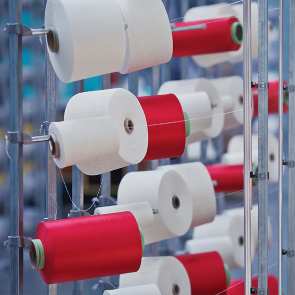
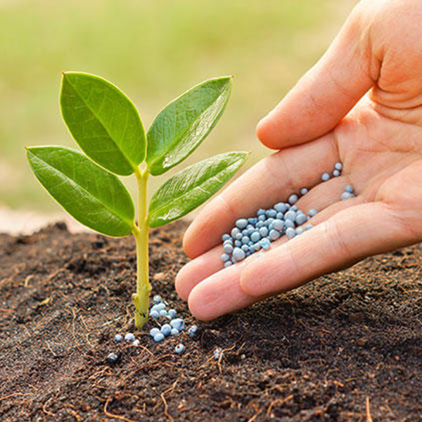
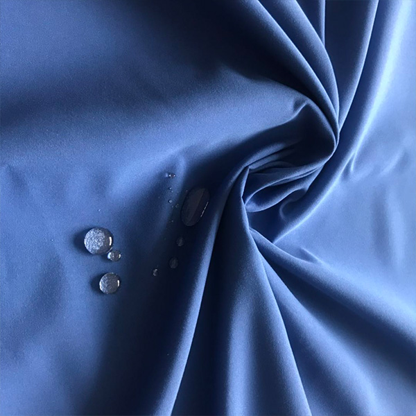
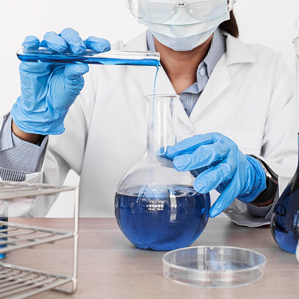
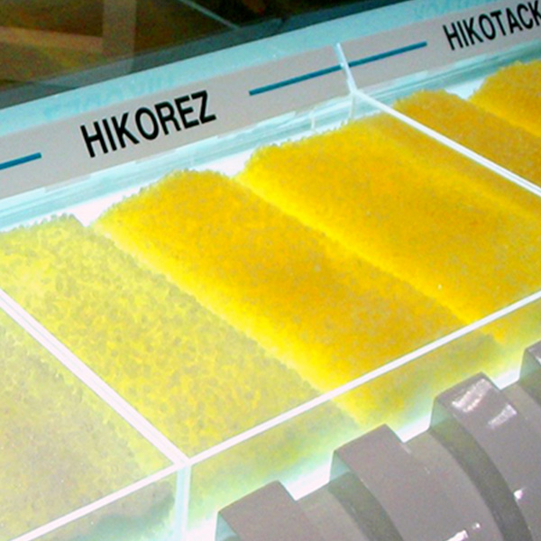
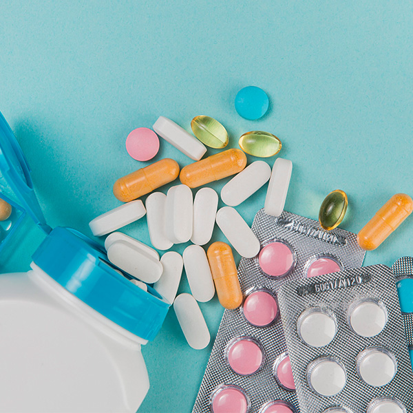

상사
화학
CHEMICAL INDUSTRY50년 이상 축적된 기술과 노하우로 시장의 흐름을 주도하고 있습니다. 코오롱글로벌은 최고 품질의 화학 원료 및 완제품을 세계 각국에 공급하고 있습니다.
“전문 인력과 오랜 기간 동안 축적된 노하우로 국내외 화학산업 수출입을 이끌고 있습니다.” 석유화학의 Up-stream 및 Down-stream에 걸쳐 다양한 화학 소재 및 원료를 수출입하고 있습니다. 폴리머를 비롯한 원사, 필름, 타이어코드, 비료, PU(폴리우레탄) 소재, 정밀화학, 의약품, 범용 수지, 석유수지, 페놀수지, 에폭시수지 등 광범위하게 화학 제품을 취급하고 있으며, 오랜 기간 동안 구축된 탄탄한 파트너와의 신뢰를 바탕으로 안정적인 사업 구조를 갖추고 있습니다. 앞으로도 신규 시장 확대와 사업영역 확장을 통해 화학 업계의 선두 주자로 나아갈 것입니다.
BUSINESS ITEM
전문 인력과 오랜 기간 동안 축적된 노하우로 국내외의 유수한 바이어들에게 공급하고 있습니다. 기술개발 및 신규시장 확대와 사업 영역 확장을 통해 화학업계의 선두주자로 나아갈 것입니다.
-

01. 화섬원료
국내외 글로벌 제조사의 전략적 파트너십을 바탕으로 고품질 화학원료 제품을 국내 및 전세계에 안정적으로 공급하고 있습니다.
취급제품- PET Chip: Bottle / Fiber / Film 용도 - Nylon Chip: Fiber / Film / Compounding 용도 - Fiber: Polyester & Nylon 장섬유 / 단섬유 - 친환경: 재생 PET Chip (Bottle, Sheet, Filament용) / PET Flake
-

02. 비료화학
전세계적으로 식량자원의 중요성이 대두됨에 따라 향후 꾸준한 성장이 전망되는 산업입니다. 과거 수 십년 동안의 풍부하고 전문화된 비료 및 농약 트레이딩(수출, 수입, 오퍼, 삼국간 거래) 노하우를 바탕으로, 다양한 고객의 요구를 만족시킬 수 있는 세심하 고 신속한 서비스를 제공함으로써, 당신의 성공적인 비료 비즈니스 수행의 동반자가 되어 드리겠습니다.
취급제품- NPK , DAP, AS(Ammonium Sulphate) - ASN(Ammonium Sulphate Nitrate), 요소, SOP, MOP, NA(Nitric Acid), 제초제
-

03. PU소재
당사는 2014년 PU 원료 Trading 사업을 최초 개발한 이후, 국내외 주요 파트너사들과 협력하며 전 세계로 사업을 확장해 나가고 있습니다.
취급제품1. PU(폴리우레탄) 소재 2. POLYOL - 연질 (Flexible) , 경질 (Rigid) , C.A.S.E 3. SOCYANATE (TDI / MDI) & ETC - TDI (Toluene diisocyanate) ,MDI (Methylene diphenyl diisocyanate) ETC (Blowing Agent, Surfactants, etc)
-

04. 정밀화학 / 수지
저희 코오롱글로벌은 제품에 대한 전문지식과 마케팅 노하우를 바탕으로 가소제, 고흡수성 수지 및 다양한 산업용도의 폴리머 및 레진에 대한 고객 욕구를 만족시키 고 있습니다.
취급제품1. 정밀화학 - 가소제, 알루미늄호일, PPSF 2. 수지 - PP, PS, POM, ABS
-

05. 산업소재
석유수지, 페놀수지는 생활 속 다양한 곳에서 고객의 삶의 질을 향상시키는데 유용하게 사용 되고 있습니다
취급제품1. 석유수지 - 점착 테이프, 각종 플라스틱 또는 고무의 개질을 위한 첨가제, 인쇄 잉크 등 우리 주변에서 점,접착성이 필요한 제품 2. 페놀수지 - 친환경 물질을 이용한 전자재료 등 첨단소재에 사용
-

06. 의약
의약품 완제품, 원료 및 중간체 등을 수출하고 있습니다. 의약품 완제품은 전문의약품 및 일반의약품 모두 취급하고 있으며, 해외 대형 유 통업체와 협업하여 계속 사업을 확대해 나가고 있습니다. 의약품 수출에 국한되지 않고, 건강기능식품 및 화장품 수출 사업으로 계속 사업을 확장해 나가고 있습니다.